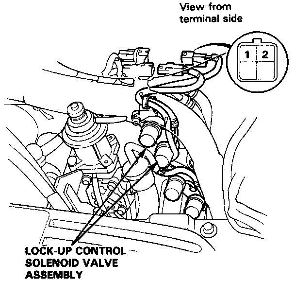

Component Test

Lock-up Control Solenoid Valve A/B Test
NOTE: Lock-up control solenoid valves A and B must be removed/replaced as an assembly.
1. Disconnect the connector from the lock-up control solenoid valve A/B.
NOTE: Do not remove the lock-up control solenoid valve A/B stay.
2. Measure the resistance between the No.1 terminal (SOL. V A) of the lock-up control solenoid valve connector and body ground and between the No. 2 terminal (SOL. V B) and body ground.
STANDARD: 12 - 24 Ohms
3. Replace the lock-up control solenoid valve assembly if the resistance is out of specification.
4. Connect the No.1 terminal of the lock-up control solenoid valve connector to the battery positive terminal. A clicking sound should be heard. Connect the No.2 terminal to the battery positive terminal. A clicking sound should be heard.
5. If not, check for continuity between the A/T control unit B3 or B8 harness and body ground.
6. Replace the lock-up control solenoid valve assembly if there is continuity between the A/T control unit B3 or B8 harness and body ground .